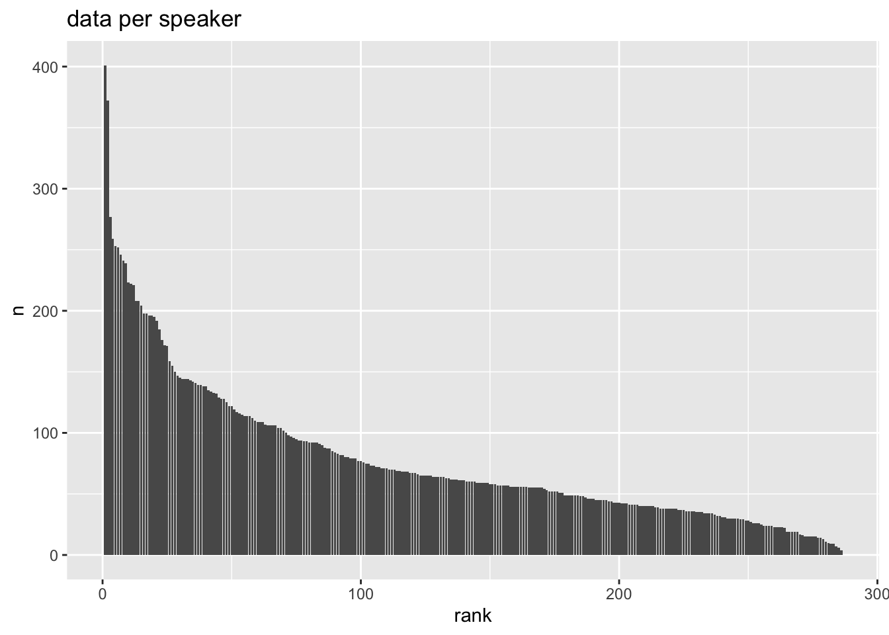
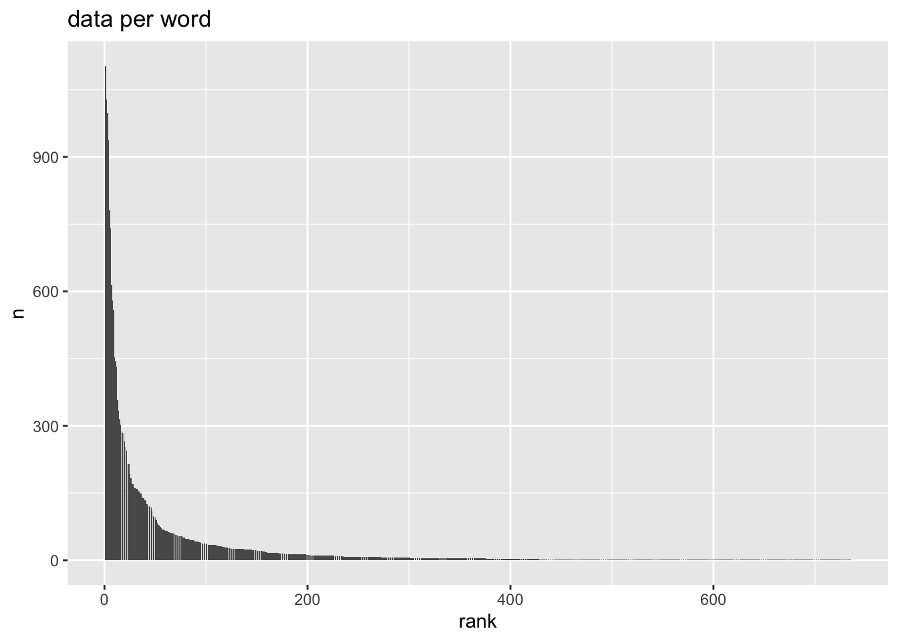
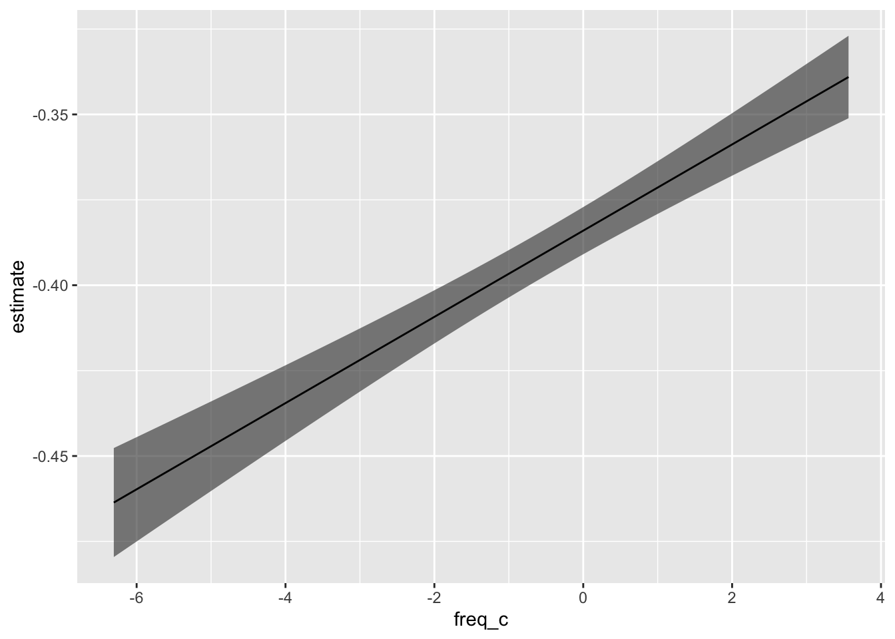
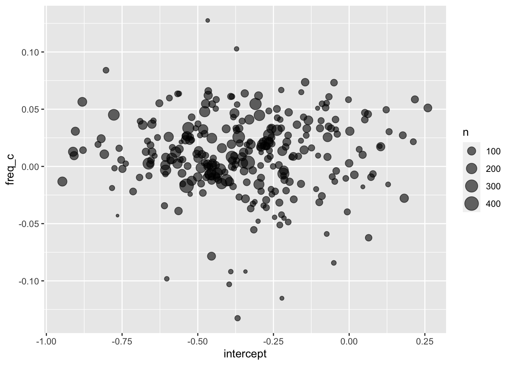
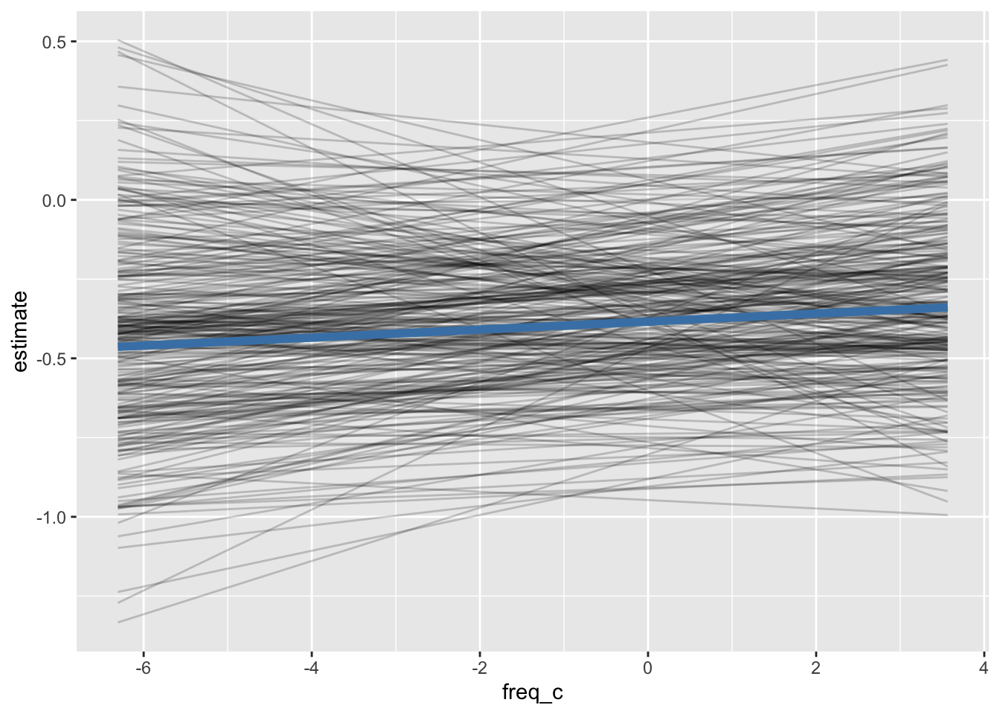
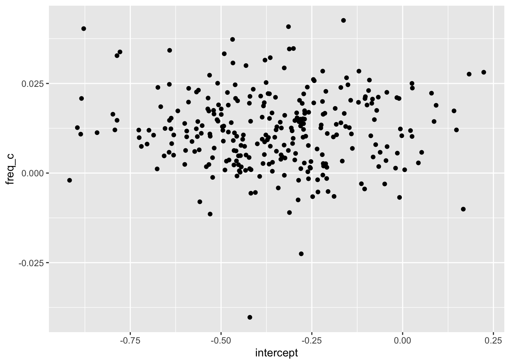
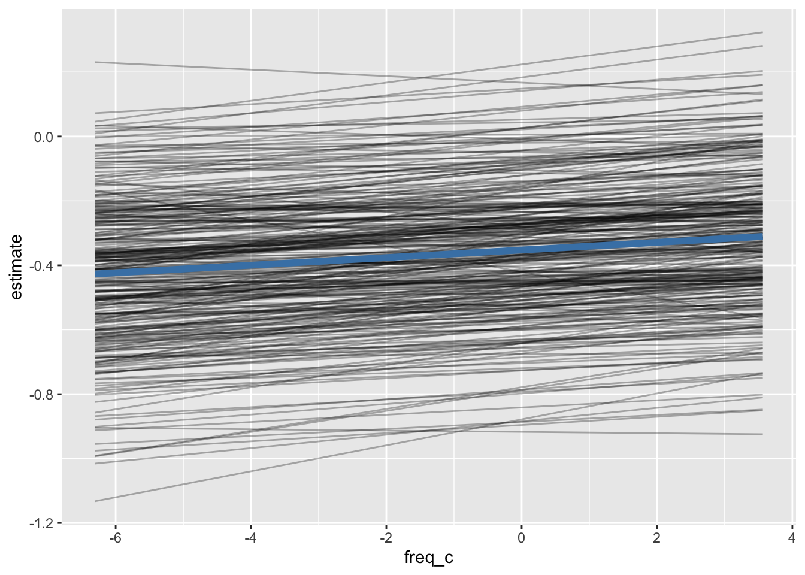

if(!require(broom.mixed)){
install.packages("broom.mixed")
library(broom.mixed)
}
if(!require(lme4)){
install.packages("lme4")
library(lme4)
}
if(!require(janitor)){
install.packages("janitor")
library(janitor)
}Setup
Installing new packages
Loading already installed packages
library(marginaleffects)
library(tidyverse)Loading data for today
ey_dat <- read_csv("https://bit.ly/ey_dat")Looking at the data
Imbalance is going to be rampant!
ey_dat |>
count(speaker) |>
mutate(
rank = rank(
desc(n),
ties.method = "random"
)
) |>
ggplot(aes(rank, n))+
geom_col()+
labs(
title = "data per speaker"
)- 1
- Getting the total number of observations per speaker.
- 2
- Adding on a column.
- 3
-
Getting the rank of
n, the number of observations. - 4
-
We want the descending rank (that is, the largest
nshould get 1. - 5
-
When two or more speakers have the same
n, randomly assign the next rank, rather than giving them all the same rank.

ey_dat |>
count(word) |>
mutate(
rank = rank(
desc(n),
ties.method = "random"
)
) |>
ggplot(aes(rank, n))+
geom_col()+
labs(
title = "data per word"
)
Prepare the data for modelling
ey_dat |>
mutate(
dob_0 = (dob - median(dob))/25,
log_freq = log2(frequency),
freq_c = log_freq - median(log_freq),
log_dur = log2(dur),
dur_c = log_dur - median(log_dur)
) |>
drop_na()->
ey_to_modelModelling
“Complete Pooling”
That is, pooling all speakers’ data together.
Q: What is the effect of word frequency on F1_n?
ey_flat <- lm(F1_n ~ freq_c, data = ey_to_model)The model parameters
tidy(ey_flat)# A tibble: 2 × 5
term estimate std.error statistic p.value
<chr> <dbl> <dbl> <dbl> <dbl>
1 (Intercept) -0.384 0.00352 -109. 0
2 freq_c 0.0126 0.00126 10.0 1.60e-23The fitted values
Step 1, get a reasonable range of freq_c values to get predictions between.
freq_range <- quantile(
ey_to_model$freq_c,
probs = c(0.025, 0.975)
)
freq_range 2.5% 97.5%
-6.306671 3.563938 Step 2, get the predictions
predictions(
model = ey_flat,
newdata = datagrid(
freq_c = seq(freq_range[1], freq_range[2], length = 50)
)
) |>
as_tibble() ->
ey_flat_predicted- 1
-
marginaleffects::predictions() - 2
- The model we’re getting predicted values from.
- 3
-
Using
marginaleffects::datagrid()to create an “grid” of data to make predictions for. - 4
-
We want predictions from the beginning to the end of
freq_rangewith 50 total predictions. - 5
- Converting the result to a tibble.
ey_flat_predicted |>
ggplot(aes(freq_c, estimate))+
geom_ribbon(
aes(ymin = conf.low, ymax = conf.high),
alpha = 0.6
)+
geom_line()
No Pooling
One model per speaker.
Fitting the models
Step 1: “Nest” the speaker data.
ey_to_model |>
group_by(speaker) |>
nest() ->
ey_nested
head(ey_nested)# A tibble: 6 × 2
# Groups: speaker [6]
speaker data
<chr> <list>
1 PH00-1-1- <tibble [110 × 15]>
2 PH00-1-2- <tibble [141 × 15]>
3 PH00-1-3- <tibble [192 × 15]>
4 PH00-1-4- <tibble [125 × 15]>
5 PH00-1-5- <tibble [204 × 15]>
6 PH02-1-1- <tibble [62 × 15]> Step 2: Write a little function to fit a linear model to a data frame
fit_lm <- function(df){
lm(F1_n ~ freq_c, data = df)
}Step 3: purrr:map() that function over the data column.
ey_nested |>
mutate(models = map(data, fit_lm)) ->
ey_nested_models
head(ey_nested_models)# A tibble: 6 × 3
# Groups: speaker [6]
speaker data models
<chr> <list> <list>
1 PH00-1-1- <tibble [110 × 15]> <lm>
2 PH00-1-2- <tibble [141 × 15]> <lm>
3 PH00-1-3- <tibble [192 × 15]> <lm>
4 PH00-1-4- <tibble [125 × 15]> <lm>
5 PH00-1-5- <tibble [204 × 15]> <lm>
6 PH02-1-1- <tibble [62 × 15]> <lm> ey_nested_models$models[[1]]
Call:
lm(formula = F1_n ~ freq_c, data = df)
Coefficients:
(Intercept) freq_c
-0.65156 0.03696 Getting the model parameters
Step 1: map tidy onto each model and unnest it.
ey_nested_models |>
mutate(
params = map(models, tidy)
) |>
unnest(params) ->
ey_nested_params
head(ey_nested_params)# A tibble: 6 × 8
# Groups: speaker [3]
speaker data models term estimate std.e…¹ stati…² p.value
<chr> <list> <list> <chr> <dbl> <dbl> <dbl> <dbl>
1 PH00-1-1- <tibble [110 × 15]> <lm> (Inter… -0.652 0.0469 -13.9 8.20e-26
2 PH00-1-1- <tibble [110 × 15]> <lm> freq_c 0.0370 0.0177 2.09 3.88e- 2
3 PH00-1-2- <tibble [141 × 15]> <lm> (Inter… -0.455 0.0448 -10.1 1.93e-18
4 PH00-1-2- <tibble [141 × 15]> <lm> freq_c -0.00526 0.0149 -0.354 7.24e- 1
5 PH00-1-3- <tibble [192 × 15]> <lm> (Inter… -0.436 0.0308 -14.1 1.64e-31
6 PH00-1-3- <tibble [192 × 15]> <lm> freq_c -0.00573 0.0120 -0.478 6.33e- 1
# … with abbreviated variable names ¹std.error, ²statisticStep 2: Select the columns of interest, and pivot wider
ey_nested_params |>
mutate(
n = map_vec(data, nrow)
) |>
select(speaker, n, term, estimate) |>
pivot_wider(
names_from = term,
values_from = estimate
) |>
janitor::clean_names() ->
ey_speaker_params
head(ey_speaker_params)# A tibble: 6 × 4
# Groups: speaker [6]
speaker n intercept freq_c
<chr> <int> <dbl> <dbl>
1 PH00-1-1- 110 -0.652 0.0370
2 PH00-1-2- 141 -0.455 -0.00526
3 PH00-1-3- 192 -0.436 -0.00573
4 PH00-1-4- 125 -0.682 0.0362
5 PH00-1-5- 204 -0.238 0.0316
6 PH02-1-1- 62 -0.0987 -0.0313 ey_speaker_params |>
ggplot(aes(intercept, freq_c))+
geom_point(
aes(size = n),
alpha = 0.6
)
Getting predictions
get_pred_tibble <- function(mod, freq_range){
predictions(
mod,
newdata = datagrid(
freq_c = seq(freq_range[1], freq_range[2], length = 10)
)
) |>
as_tibble()
}ey_nested_models |>
mutate(
n = map_vec(data, nrow),
pred = map(models, get_pred_tibble)
) |>
select(speaker, n, pred) |>
unnest(pred)->
pred_by_speakerpred_by_speaker |>
ggplot(aes(freq_c, estimate))+
geom_line(
aes(group = speaker),
alpha = 0.2
)+
geom_line(
data = ey_flat_predicted,
color = "steelblue",
linewidth = 2
)
Partial Pooling
a.k.a. mixed effects model.
Specifying and fitting the model
ey_mixed <- lmer(F1_n ~ freq_c + (1 + freq_c | speaker), data = ey_to_model)summary(ey_mixed)Linear mixed model fit by REML ['lmerMod']
Formula: F1_n ~ freq_c + (1 + freq_c | speaker)
Data: ey_to_model
REML criterion at convergence: 30304.5
Scaled residuals:
Min 1Q Median 3Q Max
-13.9927 -0.6526 -0.0698 0.5733 8.4810
Random effects:
Groups Name Variance Std.Dev. Corr
speaker (Intercept) 0.0515319 0.22701
freq_c 0.0002979 0.01726 0.01
Residual 0.2188022 0.46776
Number of obs: 22269, groups: speaker, 286
Fixed effects:
Estimate Std. Error t value
(Intercept) -0.352428 0.014030 -25.120
freq_c 0.011797 0.001658 7.116
Correlation of Fixed Effects:
(Intr)
freq_c 0.038 tidy(ey_mixed)# A tibble: 6 × 6
effect group term estimate std.error statistic
<chr> <chr> <chr> <dbl> <dbl> <dbl>
1 fixed <NA> (Intercept) -0.352 0.0140 -25.1
2 fixed <NA> freq_c 0.0118 0.00166 7.12
3 ran_pars speaker sd__(Intercept) 0.227 NA NA
4 ran_pars speaker cor__(Intercept).freq_c 0.00538 NA NA
5 ran_pars speaker sd__freq_c 0.0173 NA NA
6 ran_pars Residual sd__Observation 0.468 NA NA Compare to the flat model
tidy(ey_flat)# A tibble: 2 × 5
term estimate std.error statistic p.value
<chr> <dbl> <dbl> <dbl> <dbl>
1 (Intercept) -0.384 0.00352 -109. 0
2 freq_c 0.0126 0.00126 10.0 1.60e-23Comparison to the no-pooling models
ranef(ey_mixed)$speaker |>
janitor::clean_names() |>
rownames_to_column("speaker") |>
mutate(
intercept = intercept + fixef(ey_mixed)[1],
freq_c = freq_c + fixef(ey_mixed)[2]
)->
mixed_speaker_params
mixed_speaker_params |>
ggplot(aes(intercept, freq_c))+
geom_point()
Getting predictions
For each speaker
predictions(
ey_mixed,
newdata = datagrid(
freq_c = seq(freq_range[1], freq_range[2], length = 10),
speaker = unique(ey_dat$speaker)
)
) |>
as_tibble() ->
mixed_group_predJust the fixed effects.
predictions(
ey_mixed,
re.form = NA,
newdata = datagrid(
freq_c = seq(freq_range[1], freq_range[2], length = 10)
)
) |>
as_tibble()->
mixed_fixed_predmixed_group_pred |>
ggplot(aes(freq_c, estimate))+
geom_line(
aes(group = speaker),
alpha = 0.3
)+
geom_line(
data = mixed_fixed_pred,
color = "steelblue",
linewidth = 2
)
More than one grouping factor
You couldn’t look at both speaker and word grouping effects in the no-pooling approach
ey_mixed2 <- lmer(F1_n ~ freq_c + (1 + freq_c | speaker) + (1 | word), data = ey_to_model)summary(ey_mixed2)Linear mixed model fit by REML ['lmerMod']
Formula: F1_n ~ freq_c + (1 + freq_c | speaker) + (1 | word)
Data: ey_to_model
REML criterion at convergence: 27050.8
Scaled residuals:
Min 1Q Median 3Q Max
-15.5631 -0.6201 -0.0521 0.5600 9.6964
Random effects:
Groups Name Variance Std.Dev. Corr
word (Intercept) 0.0525761 0.2293
speaker (Intercept) 0.0495451 0.2226
freq_c 0.0002073 0.0144 0.15
Residual 0.1819768 0.4266
Number of obs: 22269, groups: word, 735; speaker, 286
Fixed effects:
Estimate Std. Error t value
(Intercept) -0.365703 0.023929 -15.283
freq_c 0.006999 0.004179 1.675
Correlation of Fixed Effects:
(Intr)
freq_c 0.672 tidy(ey_mixed2)# A tibble: 7 × 6
effect group term estimate std.error statistic
<chr> <chr> <chr> <dbl> <dbl> <dbl>
1 fixed <NA> (Intercept) -0.366 0.0239 -15.3
2 fixed <NA> freq_c 0.00700 0.00418 1.67
3 ran_pars word sd__(Intercept) 0.229 NA NA
4 ran_pars speaker sd__(Intercept) 0.223 NA NA
5 ran_pars speaker cor__(Intercept).freq_c 0.154 NA NA
6 ran_pars speaker sd__freq_c 0.0144 NA NA
7 ran_pars Residual sd__Observation 0.427 NA NA ranef(ey_mixed2)$word |>
janitor::clean_names() |>
rownames_to_column() |>
arrange(intercept) |>
head() rowname intercept
1 association -0.4122733
2 gave -0.3925951
3 gate -0.3473580
4 waste -0.3430363
5 radiation -0.3422552
6 hat -0.3366734Reuse
CC-BY-SA 4.0